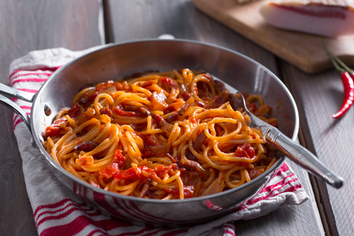

Amatriciana, ricetta favolosa dei spaghetti all’amatriciana, un capolavoro della cucina romana e laziale. Vedremo come preparare la vera Amatriciana (ricetta originale) con tutti i consigli per farla perfetta! Pochi semplici ingredienti per una Pasta all’amatriciana con i fiocchi: pomodori pelati, guanciale, pecorino, sale e pepe.